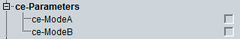

This section indicates UE capabilities for the eMTC CE modes.

Support of operation in CE mode A.
SENSe:LTE:SIGN<i>:UECapability:CEParameters:MODE:A?
Support of operation in CE mode B.
SENSe:LTE:SIGN<i>:UECapability:CEParameters:MODE:B?